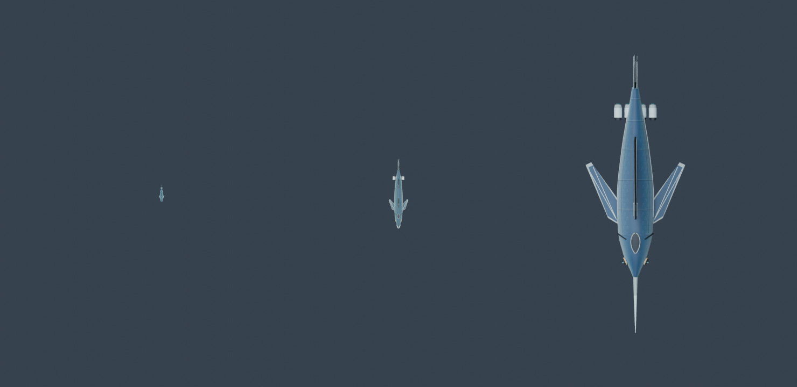
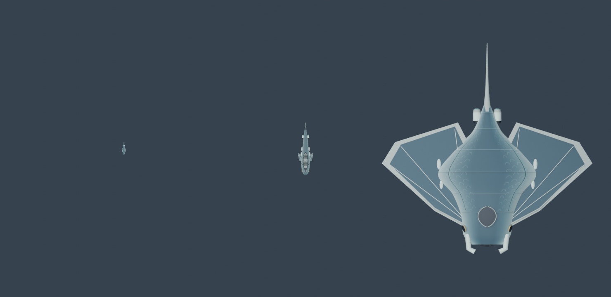
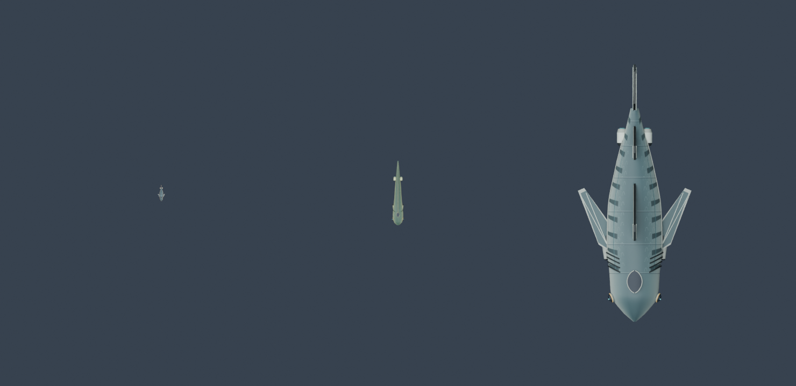
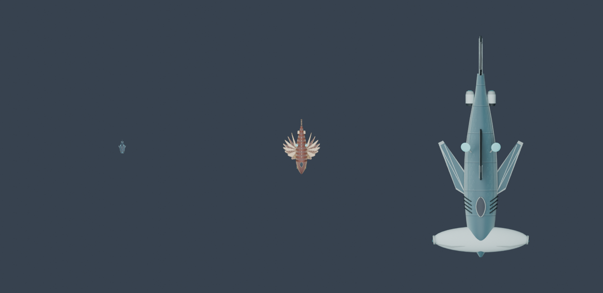
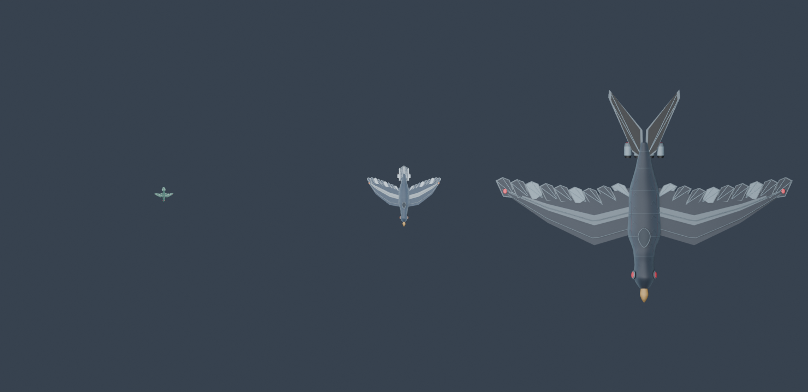
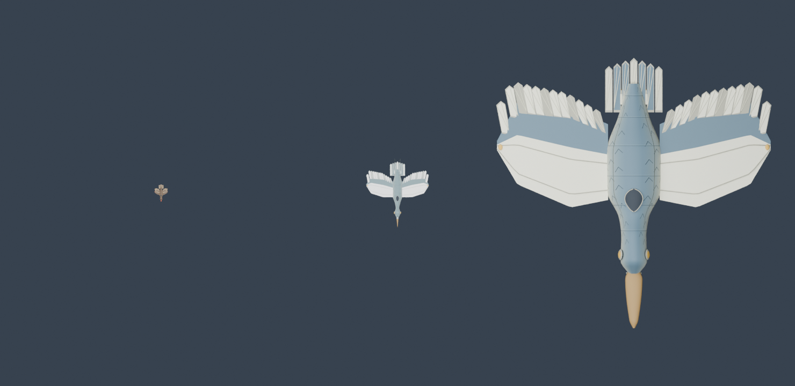
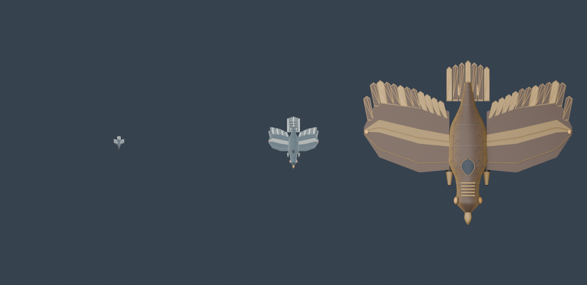
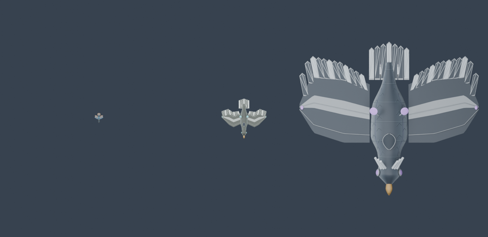

Patrols keep their original size. Each Escort is four times its corresponding Patrol; each Frigate is four times its Escort. Measured by the longest dimension, with the entire ship scaled uniformly.
Every row uses one shared camera and native model sizes. The small ships really are that small beside the large ships. The regular detail galleries enlarge each ship separately.







